1 INTRODUCTION
NuTool - PinConfigure는 Nuvoton NuMicro 제품군의 GPIO 다기능을 구성하는 데 사용됩니다. 해당 ® 기능은 다음과 같습니다.
- TreeView로 구성:
지원되는 모든 모듈은 TreeView에 수집되어 나열됩니다. 사용자는 트리를 조작하여 GPIO 다기능을 쉽게 구성할 수 있습니다.
- Configuring by individual pins:
개별 핀으로 GPIO 다중 기능을 구성하는 것이 허용됩니다. 사용자는 보다 직관적이고 효율적으로 작업을 완료할 수 있습니다.
- 레지스터 값을 직접 편집하여 구성: 사용자는 이 기능을 활용하여 값의 정확성을 검사할 수 있습니다.
- 코드 또는 보고서 생성:
GPIO 다기능을 구성한 후 사용자는 코드를 생성하거나 보고서를 인쇄할 수 있습니다. 생성된 코드는 개발 프로젝트에 포함될 수 있습니다. 보고서는 모든 구성 정보로 구성됩니다.
이 애플리케이션을 통해 사용자는 NuMicro 제품군의 GPIO 다기능을 정확하고 편리하게 구성할 수 있습니다.
1.1 SUPPORTED CHIPS
지원되는 칩 목록을 보려면 C:\Program Files (x86)\Nuvoton Tools\NuToolPinConfigure\resources\assets\Supported_chips.htm(기본 설치 경로)을 참조하세요. 다른 방법은 도구 모음에서 사용자 설명서 읽기 버튼을 클릭하는 것입니다.
2 SYSTEM REQUIREMENTS
다음은 사용자가 NuTool - PinConfigure를 실행하기 위한 시스템 요구 사항을 나열합니다.
- Windows 7 이상의 운영 체제.
또는 네트워크에서 실행할 수도 있습니다.
- https://opennuvoton.github.io/NuTool-PinConfigure/
3 NUTOOL 실행 - PINCONFIGURE
NuTool - PinConfigure를 실행하려면 NuTool - PinConfigure.exe를 두 번 클릭합니다.
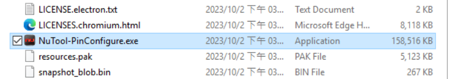
4.1 GUI Overview
PinConfigure 창에는 다양한 구성 요소가 포함되어 있습니다. 각 구성 요소의 이름은 그림 4-1에 설명되어 있습니다.
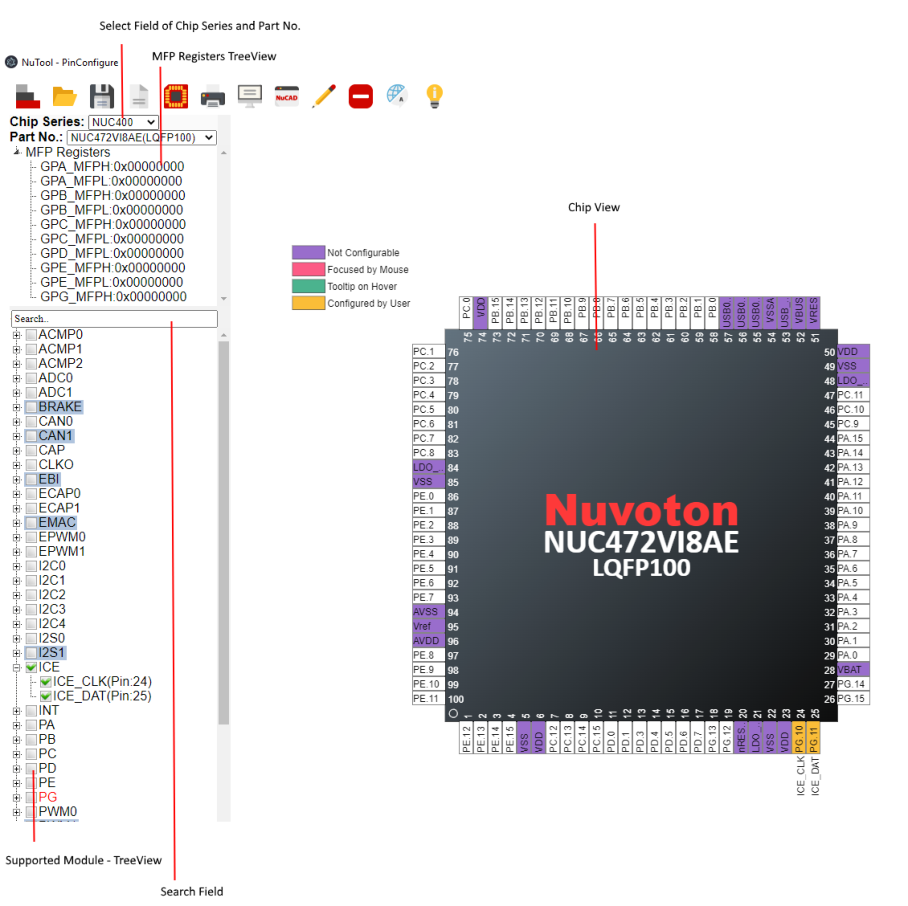
4.2 칩 시리즈 및 부품 번호 분야 선택
사용자는 왼쪽 상단 선택 필드에서 원하는 칩 시리즈와 부품 번호를 선택할 수 있습니다(그림 4-2 참조). 선택 필드와 MFP 레지스터 TreeView가 숨겨져 있는 경우 스위치 선택 필드와 MFP-Registers TreeeView를 클릭하여 표시하십시오.
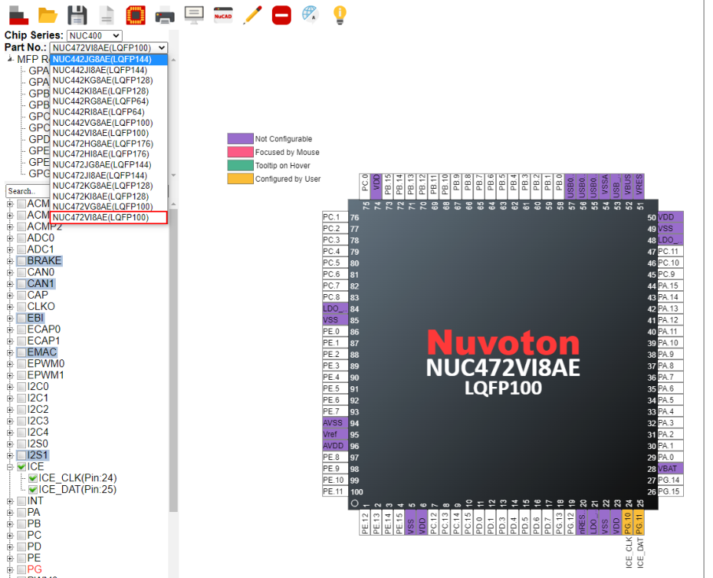
4.3 MFP Registers TreeView
MFP 레지스터의 현재 값이 이 TreeView에 표시됩니다. 또한 사용자는 예상되는 값을 두 번 클릭하고 새 값을 입력하여 직접 편집할 수 있습니다(그림 4-3 참조). 편집 후 지원되는 모듈(TreeView 및 칩 보기)의 해당 확인란이 즉시 업데이트됩니다. 일부 칩에는 GPIO 다중 기능을 구성하기 위해 두 개의 서로 다른 MFP 레지스터가 필요하므로 사용자는 이러한 칩을 두 번 클릭하여 MFP 레지스터의 값을 편집할 수 없습니다.
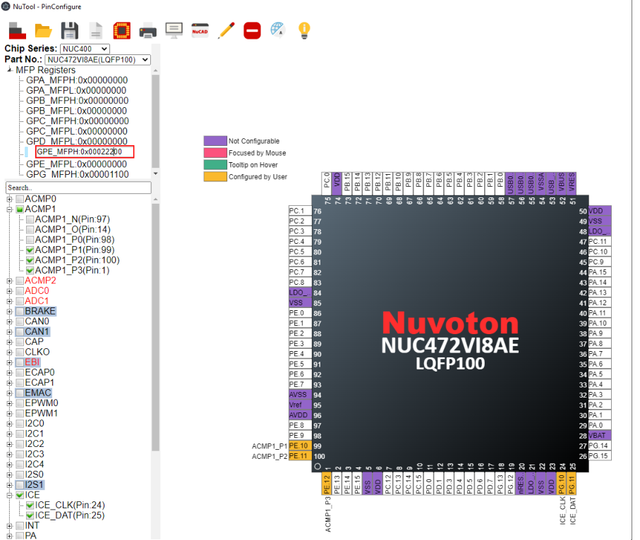
4.4.1 Usage
지원되는 모듈인 TreeView를 사용하면 사용자가 주변 장치 핀을 구성할 수 있습니다. 확인란에서 모듈 또는 개별 GPIO 다기능을 선택할 때마다 오른쪽 창에 표시된 칩 보기에 핀의 새로운 상태가 표시됩니다. 게다가, MFP 레지스터의 해당 값도 동시에 업데이트됩니다. 예를 들어, 사용자가 ACMP0을 구성하면 결과는 그림 4-4와 같습니다.
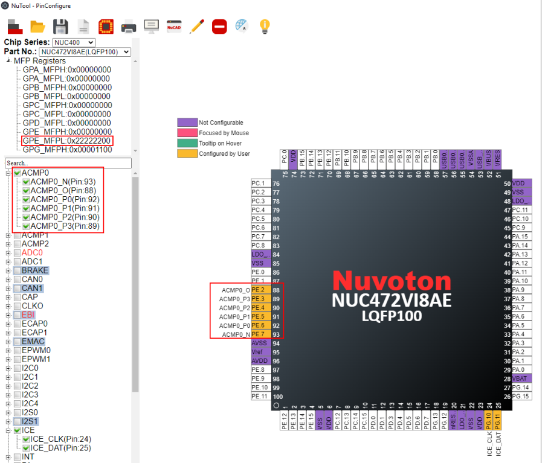
4.4.2 Conflict
핀이 모듈에 구성되면 확인란의 관련 텍스트가 빨간색으로 표시됩니다. 사용자가 의도치 않게 TreeView를 통해 핀을 다시 구성하려는 경우 이 경우를 충돌이라고 합니다. 관련 핀과 그에 구성된 모듈을 나열하는 대화 상자가 호출됩니다(그림 4-5 참조). 다음 단계를 결정하는 두 가지 옵션을 제공합니다. 예 버튼을 클릭하면 도구가 충돌을 조정합니다. 아니요 버튼을 클릭하면 도구는 나머지 핀만 구성합니다.
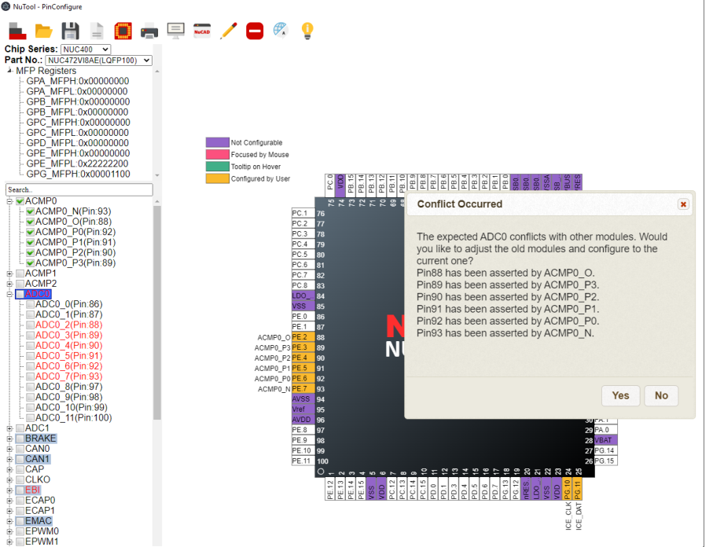
4.4.3 갈등 조정
충돌을 해결하기 위해 도구는 가능한 경우 구성된 모듈을 반복적으로 조정합니다. 예를 들어, 사용자가 EPWM1_0을 구성하려는 경우 도구는 BRAKE01을 다른 핀(핀 72)으로 조정하려고 시도합니다. 그러나 핀 72는 EMAC_MII_MDC가 차지하고 있습니다. 다행히 EMAC_MII_MDC에는 구성할 수 있는 구성 가능한 핀(핀 70)이 있습니다.

결과적으로 도구는 충돌을 조정하는 방법을 찾습니다. EPWM1_0이 구성되었습니다. 동시에 BRAKE01과 EMAC_MII_MDC는 유지됩니다. 조정 세부 사항을 알려주는 대화 상자가 나타납니다. 사용자가 충돌 조정을 취소하려면 취소 버튼을 클릭하세요.
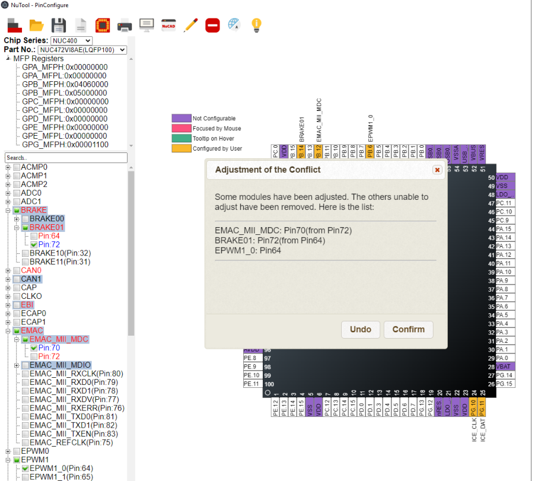
때로는 도구가 조정할 수 없는 여러 모듈을 발견할 수도 있습니다. 예를 들어 핀 93은 ACMP0_N이 차지합니다. ACMP0_N에는 하나의 옵션(핀 93)만 있습니다. 따라서 사용자가 ADC0_7을 구성하려는 경우 도구는 ACMP0_N을 조정할 수 없습니다. 그렇기 때문에 ADC0_7을 구성할 때 ACMP0_N을 제거해야 합니다.
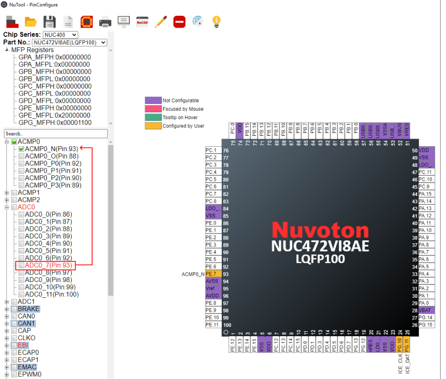
4.4.4 Multiple Selections
GPIO 기능에 동일한 기능에 대해 여러 핀을 선택할 수 있는 일부 모듈이 있습니다.
이 경우 관련 확인란이 강철 파란색으로 강조 표시됩니다. 사용자는 핀 중 하나만 선택할 수 있습니다. 예를 들어 BRAKE 모듈에서 BRAKE00의 GPIO 기능에는 핀 65와 73의 두 가지 옵션이 있지만 BRAKE00은 그 중 하나만 사용할 수 있습니다(그림 4-9 참조).
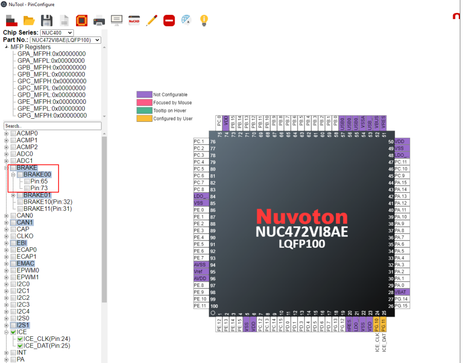
4.4.5 Search
지원되는 모듈(TreeView)에서 특정 모듈을 찾으려면 사용자는 검색 필드에 예상되는 모듈 이름을 입력하면 됩니다. 입력 후 확인란에 일치하는 텍스트가 굵은 기울임꼴로 표시됩니다. 참고로 검색은 완전 일치가 아닌 부분 일치를 사용합니다(그림 4-10 참조). 최소 입력 문자 수는 2자입니다.
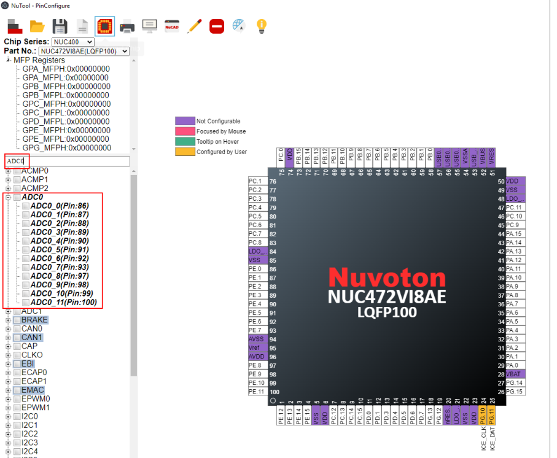
4.5 Chip View
창의 오른쪽 창에 있는 칩 보기에는 핀과 관련된 그래픽 칩이 표시됩니다. 각 핀은 현재 핀 할당에 대한 자체 정보를 가지고 있습니다. 보라색으로 강조 표시된 핀은 구성 가능한 핀에 속하지 않음을 나타냅니다. 핀이 GPIO 다기능으로 구성되는 경우 해당 기능 이름이 핀 근처에 나타납니다. 그동안 핀은 주황색으로 강조 표시됩니다. 핀에 특별한 힌트가 있는 경우 녹색으로 표시되며, 해당 핀 위로 마우스를 이동하면 플로팅 창에 툴팁으로 표시됩니다.
개별 핀별로 구성하려면 아래 단계를 따르십시오.
1. 마우스 커서를 원하는 핀으로 이동시킨 후 마우스 왼쪽 버튼을 클릭하세요. 그러면 관련된 모든 GPIO 다기능 목록이 핀 근처에 나타납니다(그림 4-11 참조).
2. 마우스 커서를 목록으로 이동하고 원하는 GPIO 기능을 선택하고 클릭합니다. 개별 핀에 의한 구성이 이루어집니다. 동시에 TreeView와 MFP 레지스터의 값이 이에 따라 업데이트됩니다(그림 4-12 참조).
개별 핀별 구성과 TreeView의 차이점은 충돌 발생을 고려하지 않고 사용자가 개별 핀별로 임의의 핀을 구성할 수 있다는 점입니다. 개별 핀별로 구성된 핀을 비활성화하려면 마우스 커서를 예상 핀으로 이동하고 마우스 왼쪽 버튼을 클릭하십시오. Reset이라는 이름의 목록에서 마지막 행을 선택합니다(그림 4-13 참조). 그러면 비활성화 작업이 완료됩니다.
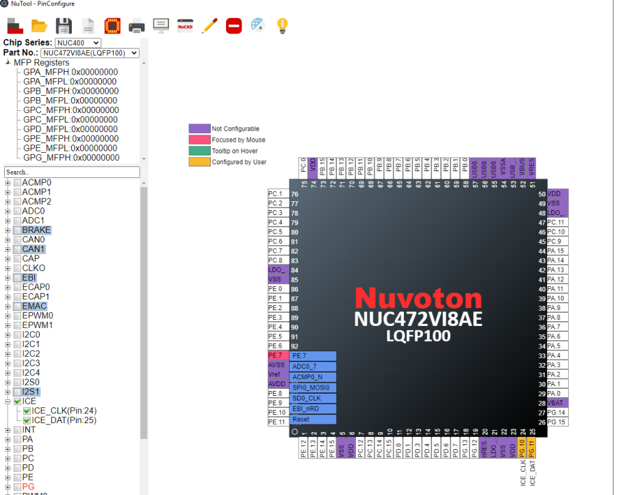
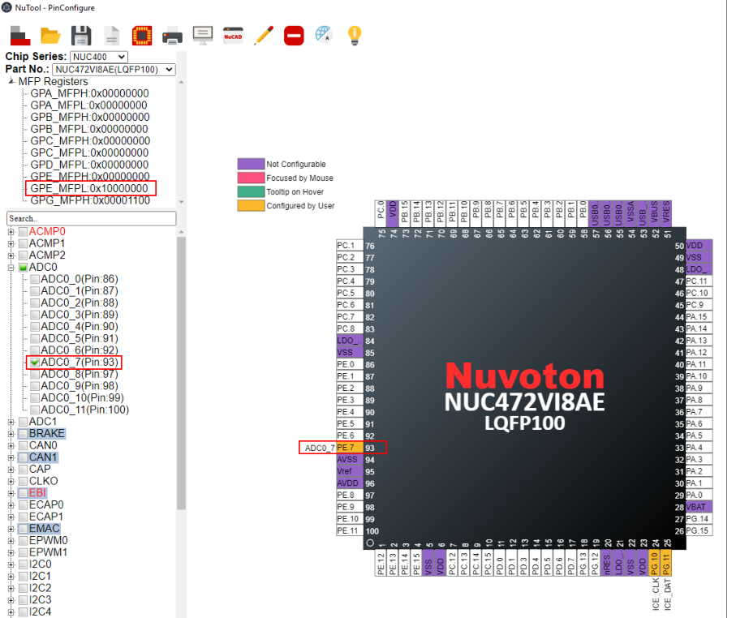
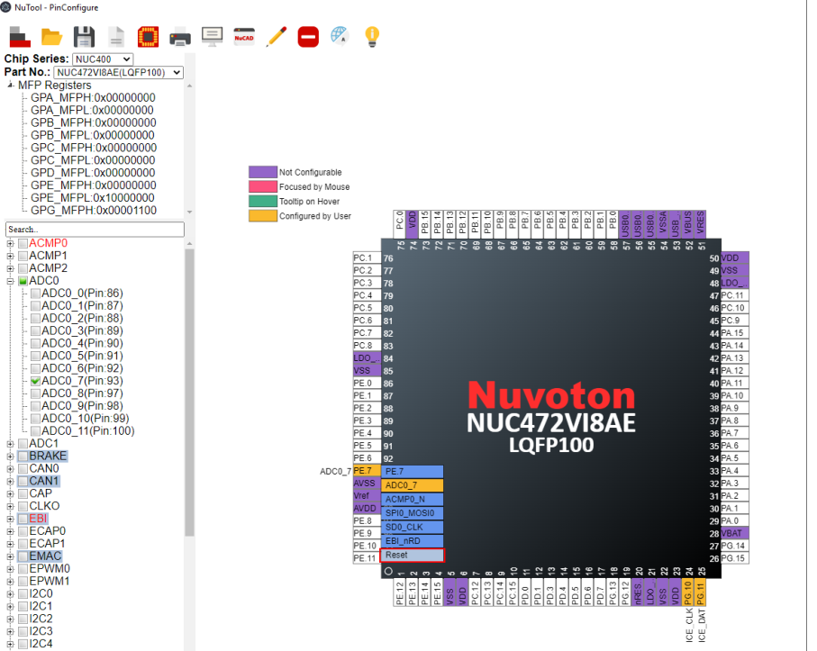
5.1 선택 필드 전환 및 MFP-Register TreeView
선택 필드와 MFP Registers TreeView를 표시하려면 도구 모음에서 Switch Select Field and MFPRegisters TreeeView 버튼을 클릭하십시오.
5.2 Load Configuration
사용자는 이전에 저장된 구성 파일(*.cfg)을 찾아보고 그 중 하나를 선택하여 구성된 MCU 칩을 복원할 수 있습니다.
구성을 로드하려면 도구 모음에서 구성 로드 버튼을 클릭하고 예상 구성 파일을 유지하는 디렉터리를 선택한 다음 열기 버튼을 클릭합니다.
5.3 Save Configuration
현재 구성을 저장하려면 다음 단계를 수행하십시오.
1. 도구 모음에서 구성 저장 버튼을 클릭합니다.
2. 사용자 정의 위치를 찾아 구성 파일(*.cfg)에 적절한 이름을 지정합니다.
3. 저장 버튼을 클릭합니다. 현재 구성은 지정된 이름의 .cfg 파일로 저장됩니다.
구성 파일은 나중에 구성된 MCU 칩을 복원하는 데 사용될 수 있습니다.
5.4 Generate Code
개발 중인 프로젝트에 포함될 코드를 생성하려면 도구 모음에서 코드 생성 버튼을 클릭하세요.
5.5 칩에 연결
칩에서 값을 읽어 각 단계의 설정을 자동으로 완료하려면 먼저 연결하려는 예상 칩 시리즈와 부품 번호를 선택하고 USB로 대상 칩에 연결한 후 도구 모음에서 Connect to Chip 버튼을 클릭하십시오.
5.6 Print Report
보고서를 인쇄하려면 도구 모음에서 보고서 인쇄 버튼을 클릭하세요. 프로젝트명을 입력하고 예상 기준을 선택한 후 확인 버튼을 클릭하면 보고서가 인쇄됩니다.
5.7 핀 설명 보고서 생성
핀 설명 보고서를 생성하려면 도구 모음에서 핀 설명 보고서 생성 버튼을 클릭합니다.
5.8 Run NuCAD
NuCAD를 실행하려면 다음 단계를 따르십시오.
1. 도구 모음에서 Run NuCAD 버튼을 클릭합니다.
2. 첫 번째 대화상자가 나타나면 NuCAD.CSV를 원하는 위치에 저장합니다.
3. 두 번째 대화 상자를 사용하여 방금 저장한 OrCAD 실행 파일과 NuCAD.CSV 파일을 선택합니다.
NuCAD는 OrCAD 라이브러리 파일(.OLB)을 생성하여 회로도 설계를 용이하게 할 수 있습니다. 해당 버전의 OrCAD 요구 사항은 16.2 이상이어야 합니다. Altium Designer 버전은 10 이상이어야 합니다. 생성된 회로도 단위는 그림 5-1과 같습니다. 사용자가 Nuvoton에서 제공하는 표준 라이브러리를 포함하려면 .exe 파일과 동일한 디렉터리에 있는 SchematicLibrary 폴더를 참조하십시오.
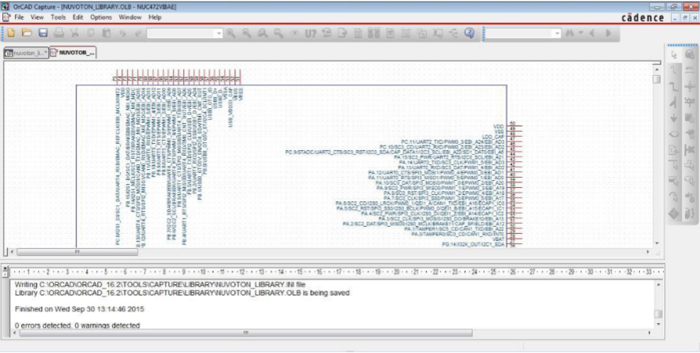
5.9 Switch Pin Description
핀 설명을 표시하려면 도구 모음에서 핀 설명 전환 버튼을 클릭합니다. 전체 설명은 칩을 중심으로 확장됩니다(그림 5-2 참조).
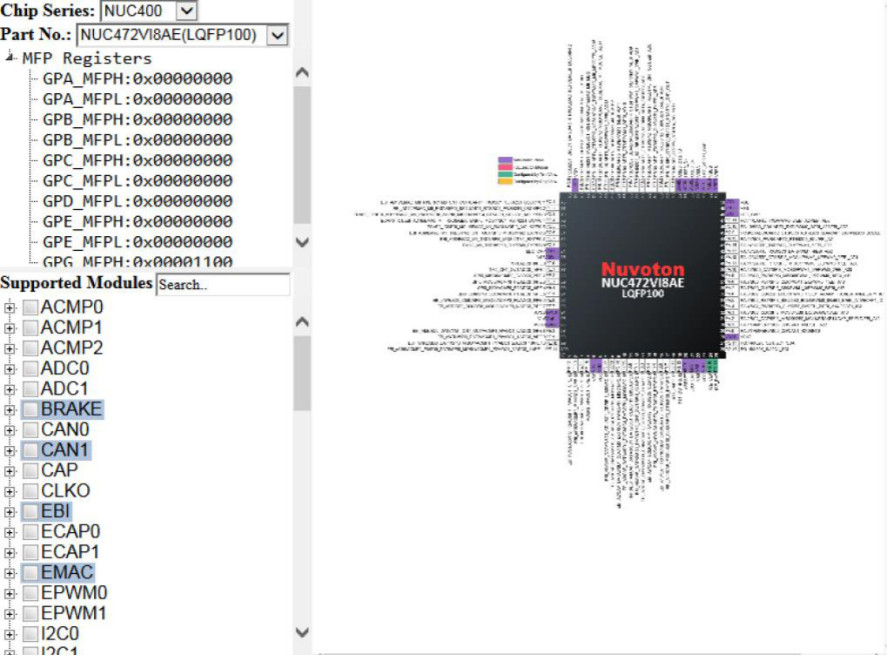
5.10 Disable All Checked Modules
선택된 모든 모듈을 비활성화하려면 도구 모음에서 선택된 모든 모듈 비활성화 버튼을 클릭하십시오.
5.11 Settings
UI 언어를 선택하려면 도구 모음에서 설정 버튼을 클릭하세요. 영어, 중국어 간체, 중국어 번체 등 세 가지 언어가 애플리케이션에서 지원됩니다. 또한, 툴팁을 표시하고 싶다면 "예"를 선택해주세요. 코드를 생성할 때 사용자는 구성된 정보가 분류되는 기준을 결정할 수 있습니다.
5.12 Read User Manual
이 사용 설명서를 읽으려면 도구 모음에서 사용 설명서 읽기 버튼을 클릭하세요.
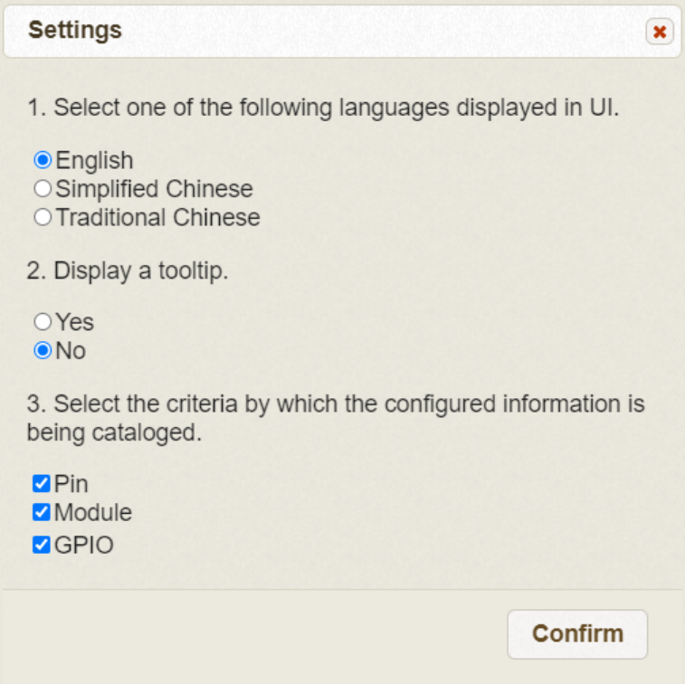